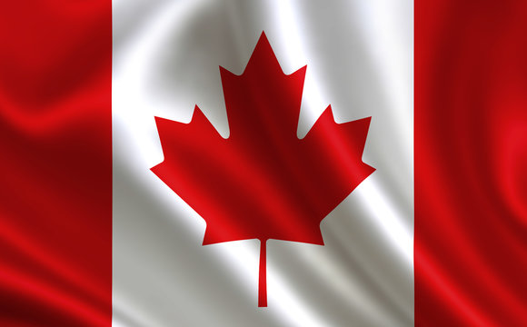

Sobre
O Canadá é um país que fica na América do Norte e consiste no segundo maior país do mundo em extensão
territorial, ficando atrás apenas da Rússia. Possui um terreno acidentado e climas que variam do
Temperado, mais ao sul, ao Ártico, ao norte. A população canadense é hoje de pouco mais de 37,7 milhões
de habitantes, os quais se concentram nas porções meridionais do território. O país possui elevados
indicadores sociais e econômicos, sendo atualmente uma das maiores economias do planeta.

Educação
A Educação no Canadá é altamente descentralizada. O Canadá não possui um órgão governamental central
encarregado de monitorar e/ou ditar regras e padrões quanto à educação no país. Ao invés disso, a
educação é responsabilidade das províncias e territórios do Canadá. Cada subdivisão possui um
Departamento de Educação, que dita regras e padrões válidos para o sistema educacional na
subdivisão. Portanto, regras tais como a idade compulsória no qual crianças e adolescentes são
obrigados a frequentar a escola varia de subdivisão para subdivisão.
Culinária
Em primeiro lugar, a mais tradicional entre todos os pratos do Canadá não é bem uma refeição, e sim
uma calda com sabor : o maple syrup.
O xarope de bordo, uma árvore típica da América do Norte, é uma conquista dos indígenas. Se trata de
uma iguaria muito versátil, com textura parecida com a do mel de abelha.
Além disso, a calda, que tem seus próprios festivais temáticos em todos os cantos do Canadá, é muito
útil para cobrir panquecas, crepes e waffles.
Além de servir de ingrediente em receitas mais complexas, como defumados, tortas e biscoitos.